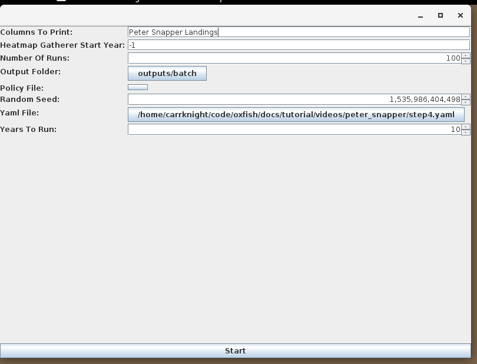
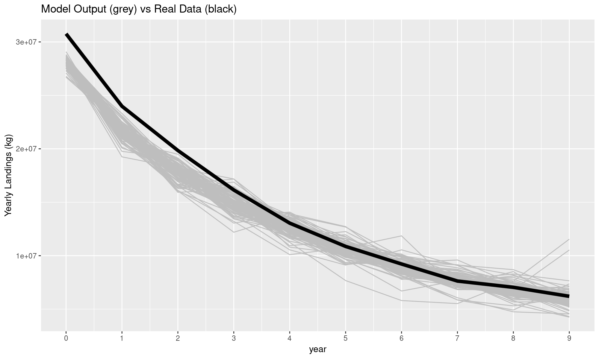

Chapter 11 {r, echo=FALSE} # knitr::include_graphics("./videos/peter_snapper/calibration6.png") #
The fitness represents the distance between the two time series (about 10,000t off over 10 years). The solution in the log is the catchability value we are looking for. Eva scales it between -10 and 10. The catchability \(q\) given eva suggestion \(x\) then is:
\[ $q$ = \frac{(x+10)}{20} \times (0.005-0.00001) \]
Since the solution quoted by eva is −7.427 the catchability guessed is: \(0.000641964\)
Finally we can add this number in the scenario:
gear:
Random Catchability:
gasPerHourFished: '70.0'
meanCatchabilityFirstSpecies: '0.000641964'
meanCatchabilityOtherSpecies: '0.01'
standardDeviationCatchabilityFirstSpecies: '0.0'
standardDeviationCatchabilityOtherSpecies: '0.0'Giving us the final scenario:
Flexible:
biologyInitializer:
Single Species Biomass Normalized:
biomassSuppliedPerCell: false
carryingCapacity: '110749315'
differentialPercentageToMove: '0.001'
grower:
Common Logistic Grower:
steepness: '0.372'
initialBiomassAllocator:
Random Allocator:
maximum: '.8'
minimum: '.7'
initialCapacityAllocator:
Depth Allocator:
delegate:
Equal Allocation:
constantValue: '1.0'
maxDepth: '800.0'
minDepth: '30.0'
percentageLimitOnDailyMovement: '0.01'
speciesName: Peter Snapper
unfishable: false
cheaters: false
fisherDefinitions:
- departingStrategy:
Fixed Rest:
hoursBetweenEachDeparture: '12.0'
destinationStrategy:
Imitator-Explorator:
alwaysCopyBest: true
automaticallyIgnoreAreasWhereFishNeverGrows: true
automaticallyIgnoreMPAs: false
backtracksOnBadExploration: true
dropInUtilityNeededForUnfriend: '-1.0'
ignoreEdgeDirection: true
ignoreFailedTrips: false
maxInitialDistance: -1.0
objectiveFunction:
Hourly Profit Objective:
opportunityCosts: true
probability:
Fixed Probability:
explorationProbability: '0.2'
imitationProbability: '1.0'
stepSize: uniform 1.0 10.0
discardingStrategy: No Discarding
fishingStrategy:
Until Full With Day Limit:
daysAtSea: '10.0'
fuelTankSize: '100000.0'
gear:
Random Catchability:
gasPerHourFished: '70.0'
meanCatchabilityFirstSpecies: '0.000641964'
meanCatchabilityOtherSpecies: '0.01'
standardDeviationCatchabilityFirstSpecies: '0.0'
standardDeviationCatchabilityOtherSpecies: '0.0'
gearStrategy: Never Change Gear
holdSize: '15000.0'
hourlyVariableCost: '0.0'
initialFishersPerPort:
Benoa : 25
Kupang: 50
literPerKilometer: '3.0'
logbook: No Logbook
regulation: Anarchy
speedInKmh: '16.0'
tags: ''
usePredictors: false
weatherStrategy: Ignore Weather
gasPricePerLiter: '10000'
habitatInitializer: All Sand
mapInitializer:
From File Map:
gridWidthInCell: '70.0'
header: true
latLong: true
mapFile: /home/carrknight/code/oxfish/inputs/indonesia/indonesia_latlong.csv
mapMakerDedicatedRandomSeed: null
market:
Fixed Price Market:
marketPrice: '40000.0'
networkBuilder:
Equal Out Degree:
allowMutualFriendships: true
degree: '2.0'
equalOutDegree: true
plugins: [
]
portInitializer:
List of Ports:
ports:
Benoa: 115.238843,-8.799605
Kupang: 123.586249,-10.148044
usingGridCoordinates: false
portSwitching: false
weatherInitializer:
Constant Weather:
temperature: '30.0'
windOrientation: '0.0'
windSpeed: '0.0'We can look at our calibration now by running it in batch 100 times and plotting its landings. We saw how to run batches in chapter 7. This is just a straightforward application of it.

And here’s how the model output (grey lines) compares to the “real world” (bold black line). It’s quite close in the later years but not so much very early on.

I can now reveal that the “real” 10 years of landings were actually also coming from POSEIDON and we can check how far off the real values were from the original:
As you can see \(K\) and \(r\) were not perfectly estimated (in particular for \(K\) we are about 10,000t too low which explains the gap between real and calibrated output). We also had errors in gas consumption, mileage and catchability although all these were minor.
Overall, quite a nice match given how little data we used.
11.1 Validating
Validation involves keeping some data out of the calibration phase to test the quality of the model. What we could have done is to estimate \(K\), \(r\) and \(q\) from only, say, the first 8 years of landings and then look at the distance to port.